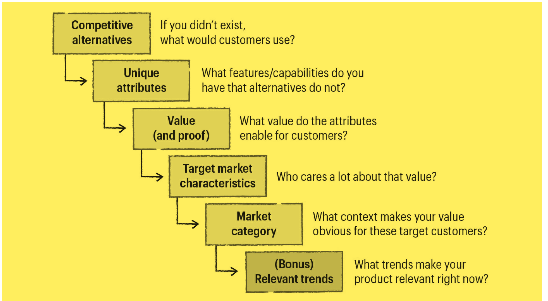
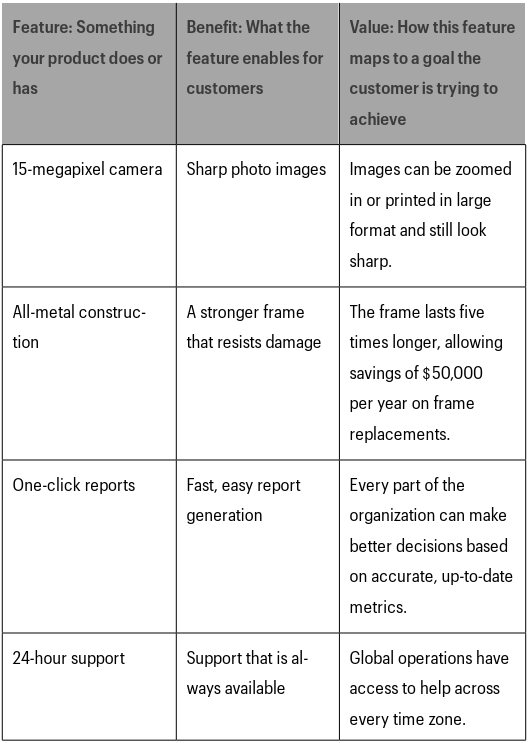

Positioning as Context
Positioning is the act of deliberately defining how you are the best at something that a defined market cares a lot about.
Positioning is “context setting” for products. When we encounter something new, we will attempt to make sense of it by gathering together all of the little clues we can quickly find to determine how we should think about this new thing. Without that context, products are very difficult to understand, and the whole company suffers—not just the marketing and sales teams.
Customers need to be able to easily understand what your product is, why it’s special and why it matters to them.
Signs of weak positioning
Your current customers love you, but new prospects can’t figure out what you’re selling.
- If you see a disconnect between how your happy customers think about your product and how prospects see it, you likely have a positioning problem.
Your company has long sales cycles and low close rates, and you’re losing out to the competition.
You have high customer churn
You are under price pressure.
- Clear positioning helps prospects understand that you are a leader in your market segment and that you offer considerable value, making it easier for you to charge a premium.
When customers encounter a product they have never seen before, they will look for contextual clues to help them figure out what it is, who it’s for and why they should care. Taken together, the messaging, pricing, features, branding, partners and customers create context and set the scene for the product.
Two Traps
Trap 1: You are stuck on the idea of what you intended to build, and you don’t realize that your product has become something else. For example, you might have intended to create a new dessert but it may be better positioned as a snack. Positioning the product as a dessert vs a snack can mean significant differences in
- Target buyers and where you sell: Upscale restaurants vs coffee shops
- Competitive alternatives: Cakes and ice-creams vs Donuts and bagels
- Pricing and margin: Smaller volume, higher prices vs Higher Volume , lower prices
- Key product features and roadmap: Organic and gluten free vs More carmael.
Choices we make in positioning can have a massive impact on our business.
- Target buyers and where you sell: Upscale restaurants vs coffee shops
Trap 2: You carefully designed your product for a market, but that market has changed.
For example, say you positioned you creation as a ‘diet snack’ but the new trend of health eating means a competitor offering something very similar positions it as a ’gluten free paleo snack ;
Great Positioning
Great positioning takes into account the following
- The customer’s point of view on the problem you solve and the alternative ways of solving that problem.
- The ways you are uniquely different from those alternatives and why that’s meaningful for customers.
- The characteristics of a potential customer that really values what you can uniquely deliver.
- The best market context for your product that makes your unique value obvious to those customers who are best suited to your product.
Components of Effective positioning
Traditional Positioning
The traditional positioning statement looks something like this:
FOR target buyers, your offering
IS A market category WHICH PROVIDES competitor’s benefits UNLIKE primary competitor WHICH PROVIDES competitor’s benefits
This suffers from the following problems
It assumes you know the best way to fill in the blanks. It might do a good job of capturing your current thinking, but it doesn’t give you any clues about whether your positioning is good or bad.
It reinforces the status quo. Most offerings are not explicitly positioned because people believe there is only one possible “default” way to position their product. Rather than helping companies think creatively about what they do, the positioning statement encourages them to look at the market the way they have always looked at it. Status quo thinking will almost always put the existing market leaders at an advantage and leave you blind to potential shifts in the way your customers see your market.
It doesn’t give you any hints about what to do next. Positioning statements do not lead to anything useful once it is completed. Marketing does not use it create messaging. Product does not use it to inform what features they should build.Sales use it to figure out what types of customers they should sell to.
It’s hard to remember. The structure of the positioning statement makes it difficult to parse or memorize, so even as a way of simply documenting your current thinking, the positioning statement is a complete failure.
Five Components of Effective Positioning

- Competitive alternatives- What customers would do if your solution didn’t exist
- The alternative need not be a competitor’s product but an in-house tool built using excel.
- Unique attributes - The features and capabilities that you have and the alternatives lack
- Value (and Proof): The benefit that those features enable for customers
- Must be hard data or third party opinions
- Must be provable in an objective and demonstrable way
- Target market characteristics: The characteristics of a group of buyers that lead them to really care a lot about the value you deliver
- Target market is customers who buy quickly, rarely ask for discounts and tell their friends about your offerings
- Market category: The market you describe yourself as being part of, to help customers understand your value
- Choice of market category triggers a powerful set of assumptions. A poor category choice can trigger assumptions that do not apply to our product .
- Relevant trends : Trends that your target customers understand and/or are interested in that can help make your product relevant right now
Ten Step Positioning Process
1) Understand customers who love your product
- Make a short list of your best customers
- Position your product broadly until you have enough customer experience to start seeing patterns.
- If a company sells a group of products together, position the company first before positioning individual products
2) Form a positioning team
- Should include representation from sales, marketing , customer success etc.
- Person who owns business strategy should fully support the positioning
3) Align your positioning vocabulary and let go of your positioning baggage
- Market confusion starts with our disconnect between understanding the product as product creators, and understanding the product as customers first perceive it.
- E.g. Clearpath robotics repositioned from the robotics category (which assumed stationary robots) to self driving vehicles for industrial use
4) List your true competitive alternatives
The features of our product and the value they provide are only unique, interesting and valuable when a customer perceives them in relation to alternatives.
Understanding the customer’s problem isn’t enough, to really understand how they perceived our strengths and weaknesses , we need to understand the alternatives to which they compared us.
Understand what a customer might replace you with in order to understand how they categorize their solution
In cases, where customers don’t understand that they have a problem
1) Remain focused on the best fit customers list and name only what those customers would see as an alternative <br>- Rank the list from most common to least common
Group the alternatives if they cluster e.g. Do it manually includes hiring an intern or using excel.
If the arrival of a competitor signals a change in the way customers think about a market, positioning has to be revisited.
5) Isolate your unique attributes or features
- Isolate what makes you different and better than those alternatives
- List all capabilities you have the alternatives do not
- Your opinion of your strengths is irrelevant without proof
- If ease of use is an attribute
- What makes feature easier to use and how you prove it ?
- Does competitor product require training and yours doesn’t?
- Statements from an analyst or customer is better.
- Concentrate on ‘consideration’ attributes (those a customer care about when evaluating whether to buy or not) over ‘retention attributes’ (customer cares about this when renewing e.g. customer care)
- If ease of use is an attribute
6) Map the attributes to value “themes”
- Capture the value each unique attribute enables for the customer.

- Group attributes into 1-4 value clusters.
- Positioning is not about highlighting every little feature a customer loves, but taking the most critical things that make us special and worth considering and bringing it front and center
7) Determine who cares a lot
Useful segmentation needs to go beyond demographics and firmographics
An actionable segmentation captures a list of a person’s or company’s easily identifiable characteristics that make them really care about what you do. e.g. skills a company has or does not, other products they have invested in.
In general, the segment needs to meet at least two criteria to be worthy of focus:
(1) it needs to be big enough that it’s possible to meet the goals of your business, and- it needs to have important, specific, unmet needs that are common to the segment.
If you’re a tennis racquet maker and decide to market a racquet for seniors, you need to figure out first if there are enough tennis-playing seniors who might need a racquet, and second if you could fulfil an unmet need that seniors have in their racquets.
Target as narrowly as you can to meet your near-term sales objectives
8) Find a market frame of reference that puts your strengths at the center and determine how to position it
- We position our offering in a market to trigger a set of assumptions—about competitors, features and pricing—that work to our advantage. By choosing to position within a specific market, you’re giving your prospects clues about what products they should compare you with, your key features, your price and your benefits. Those comparisons help customers quickly figure out what your product is all about and whether or not they should consider purchasing it.
- Use abductive reasoning
- Isolate your key features, their value and ask yourself -what types of products typically have those features?
- Examine adjacent (growing) markets
- Pay attention to adjacent markets that are growing quickly. Positioning yourself in a growing market has benefits of rising customer interest, media focus and buzz.
- Ask your customers
Different positioning approaches
- Head to Head: positioning to win an existing market
- You are aiming to be the leader in a market category that already exists in the minds of customers. If there is an established leader, your goal is to beat them at their own game by convincing customers that you are the best at delivering the solution.
- If you are already the market leader, you need to continually reinforce to your buyers that the current way of thinking about the market is the best one. This work includes reinforcing the current buying criteria and reiterating why you are the best to deliver those things. You need to quickly and forcefully defend against competitors who attempt to convince buyers to pay attention to other, emerging criteria. You also need to continually demonstrate why you deliver on these criteria better than anyone else in the market.
- Big Fish, Small Pond: Positioning to win a subsegment of an existing market
- You are aiming to dominate a piece of an existing market category. Your goal is not to take on the overall market leaders directly, but to win in a well-defined segment of the market. You do this by targeting buyers in a subsegment of the broader market who have different requirements that are not being met by the current overall market leader.
- Many startups compete in established market categories and do so successfully by first breaking up the market into smaller pieces and focusing on one piece they can win. In marketing, the process of splitting up an existing market is called subsegmenting. A market can be subsegmented by industry (manufacturing vs. retail), by geographic region (North America vs. South America), company size and a myriad of other criteria.
- The goal of the Big Fish, Small Pond style of positioning is to carve off a piece of the market where the rules are a little bit different—just enough to give your product an edge over the category leader.
- You are not trying to change the purchase criteria for the overall category; in fact, you will have to prove that you do a “good enough” job in those areas when compared with the category leaders. Your focus is showing that there is a subsegment of the overall category with a specific set of needs that the current category leaders are not addressing. Those needs are very important—so important that buyers may want to relax a bit on the overall category criteria to make sure that their subsegment needs are met.
- The need of the subsegment must be clearly identifiable, but even when it is, your ability to meet it must be strong enough to convince buyers to go with you over the safer choice of the market leader. These buyers were getting along for the most part by buying a solution that didn’t do everything but was likely “good enough” for their business. Convincing them to switch will require showing them that you have deeply understood their specific pain and have fully solved the problem.
- There should be a way to quantify the value to the customer if they choose your solution over the market leader’s more generic solution.
- Create a new game : Positioning to win a market you create
- You are aiming to create a new market category. Your goals are first to prove to customers that a new market category deserves to exist, then to define the parameters of that market in the minds of customers, and lastly, to position yourself as the leader within it.
- Why is the problem unique?
- Why do existing solutions in other categories fall short of solving that problem?
- If your product cannot be well positioned in any existing category, this might be a good option for you. If your solution requires both a new way of thinking about the boundaries of an existing category and a new way of thinking about purchase criteria, then it probably makes more sense to create an entirely new category rather than attempt to stretch existing categories along more than one dimension.
- To credibly create a new category, you need a product that is demonstrably, inarguably new and different from what exists in other market categories.
- To help customers make sense of why the category hasn’t emerges sooner, there should be a very strong answer to the questions, Why now? What factors have finally made this category possible and/or necessary?
- Category creation is about selling the market on the problem first, rather than on your solution.
- You are aiming to create a new market category. Your goals are first to prove to customers that a new market category deserves to exist, then to define the parameters of that market in the minds of customers, and lastly, to position yourself as the leader within it.
“The most successful efforts in category creation do not result from company executives creating an acronym at an offsite. Rather they are discovered from deeply understanding a narrow set of customers. These customers are often ‘freaks,’ extreme in their attitudes and behavior, forged by tectonic technological and societal shifts. The category then emerges when and if the freakish attitudes and behavior become mainstream. Category creation is hard, slow work, but if you are successful the rewards are huge.”
9) Layer on a trend
- Think of your product’s strengths, your market context and a trend that is relevant to your customer base as three overlapping circles. You are aiming for the center, where all three intersect.
Translating Positioning into a Sales Story
- Start with a definition of the problem you are trying to solve
- e.g. “Insurance companies today are trying to make their claims process less difficult for demanding digital-savvy customers”
- Describe how customers are attempting to solve the problem today and where the current solution falls short
- e.g. “Insurers have added mobile claims functionality, but it still requires customers to do many steps of the process manually,”
- ‘Perfect world’ : Describe what the features of a perfect solution would be knowing what you know about the problem and limitations of the current solution
- e.g. “In a perfect world, customers could complete the entire claims process seamlessly with their mobile device,”
- Introduce the product or company and position it in the relevant market category
- e.g. “Mobileclaimsorama is a mobile claims management solution for insurers,”
- Talk about each of the value themes with a bit more detail on how the solution enables the value
- The team needs to agree on how to define the problem, current solutions, the gap and the key purchase criteria that a customer should have when looking for a solution in your market.
Messaging Document
- A messaging document helps you keep a record of the accepted baseline messaging, gives everyone a common starting point for building specific copy for a specific purpose and keeps the language (and the positioning) from evolving too far away from the agreed-upon starting point.
- Pricing reflects positioning and might need to be adjusted. There are price expectations in each market category, so getting your pricing in line with those will help reinforce that your product belongs there. For example, we raised the pricing for our “CRM for investment banks” because our investment banking customers didn’t expect us to be the same price as a general-purpose CRM.
Key Takeaways
- Any product can be positioned in multiple markets. Your product is not doomed to languish in a market where nobody understands how awesome it is.
- Great positioning rarely comes by default. If you want to succeed, you have to determine the best way to position your product. Deliberate, try, fail, test and try again.
- Understanding what your best customers see as true alternatives to your solution will lead you to your differentiators.
- Position yourself in a market that makes your strengths obvious to the folks you want to sell to.
- Use trends to make your product more interesting to customers right now, but be very cautious. Don’t layer on a trend just for the sake of being trendy—it’s better to be successful and boring, rather than fashionable and bewildering.